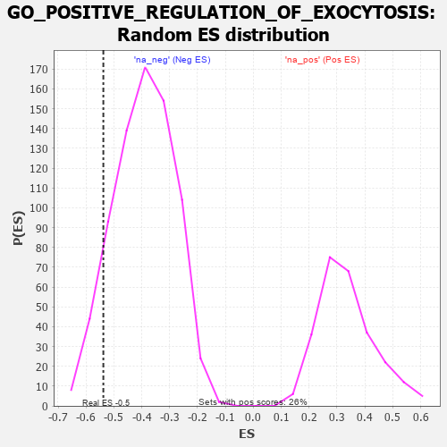

| | | Dataset | 7d |
| Phenotype | NoPhenotypeAvailable |
| Upregulated in class | na_neg |
| GeneSet | GO_POSITIVE_REGULATION_OF_EXOCYTOSIS |
| Enrichment Score (ES) | -0.53781074 |
| Normalized Enrichment Score (NES) | -1.3657838 |
| Nominal p-value | 0.102841675 |
| FDR q-value | 0.3866025 |
| FWER p-Value | 1.0 |
Table: GSEA Results Summary
 Fig 1: Enrichment plot: GO_POSITIVE_REGULATION_OF_EXOCYTOSIS
Fig 1: Enrichment plot: GO_POSITIVE_REGULATION_OF_EXOCYTOSIS
Profile of the Running ES Score & Positions of GeneSet Members on the Rank Ordered List
| PROBE | GENE SYMBOL | GENE_TITLE | RANK IN GENE LIST | RANK METRIC SCORE | RUNNING ES | CORE ENRICHMENT | | 1 | SNF8 | | | 2119 | 0.288 | -0.2373 | No |
| 2 | SYK | | | 2186 | 0.278 | -0.2173 | No |
| 3 | VPS4A | | | 2654 | 0.205 | -0.2553 | No |
| 4 | AP1G1 | | | 3210 | 0.121 | -0.3128 | No |
| 5 | HGS | | | 3476 | 0.080 | -0.3380 | No |
| 6 | CDK5 | | | 3480 | 0.080 | -0.3302 | No |
| 7 | SYT4 | | | 4590 | -0.116 | -0.4579 | No |
| 8 | VAMP8 | | | 4905 | -0.179 | -0.4793 | No |
| 9 | DOC2B | | | 5113 | -0.229 | -0.4820 | No |
| 10 | RAB7A | | | 5302 | -0.271 | -0.4782 | No |
| 11 | VAMP7 | | | 5777 | -0.399 | -0.4974 | Yes |
| 12 | LAMP1 | | | 5796 | -0.404 | -0.4587 | Yes |
| 13 | SNX4 | | | 5834 | -0.415 | -0.4212 | Yes |
| 14 | SYT9 | | | 5992 | -0.469 | -0.3934 | Yes |
| 15 | SYTL4 | | | 6304 | -0.578 | -0.3739 | Yes |
| 16 | ARF1 | | | 6583 | -0.701 | -0.3378 | Yes |
| 17 | RAB5A | | | 6655 | -0.741 | -0.2715 | Yes |
| 18 | DNM1L | | | 6963 | -0.913 | -0.2175 | Yes |
| 19 | CFTR | | | 7143 | -1.030 | -0.1355 | Yes |
| 20 | SYT1 | | | 7148 | -1.033 | -0.0312 | Yes |
| 21 | KCNB1 | | | 7444 | -1.327 | 0.0663 | Yes |
Table: GSEA details [plain text format]

Fig 2: GO_POSITIVE_REGULATION_OF_EXOCYTOSIS: Random ES distribution
Gene set null distribution of ES for GO_POSITIVE_REGULATION_OF_EXOCYTOSIS